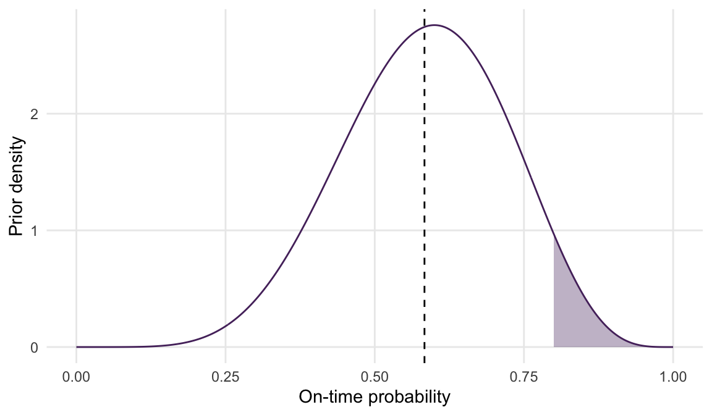
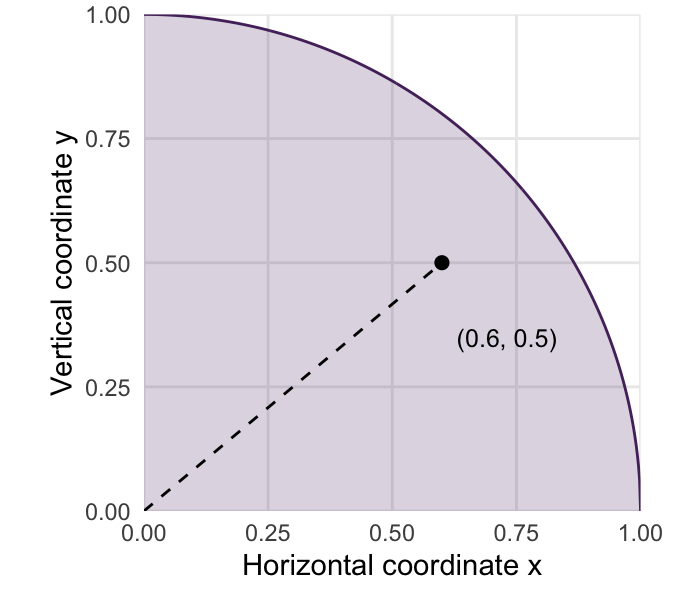
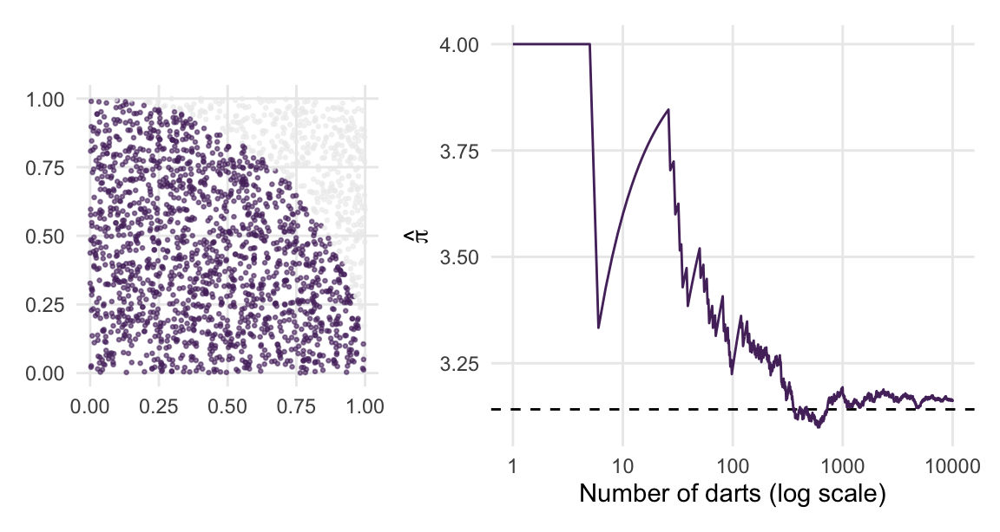
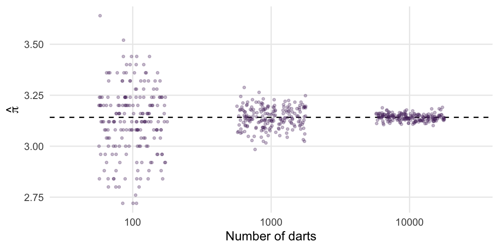
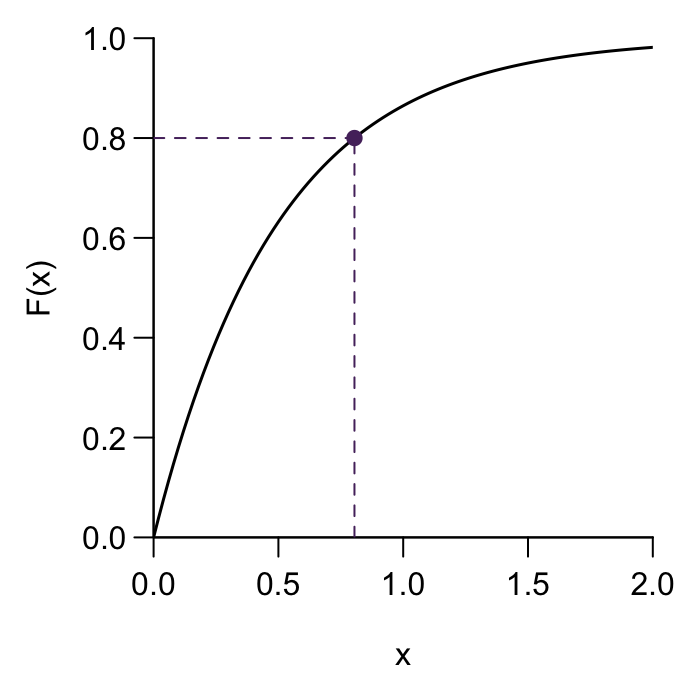
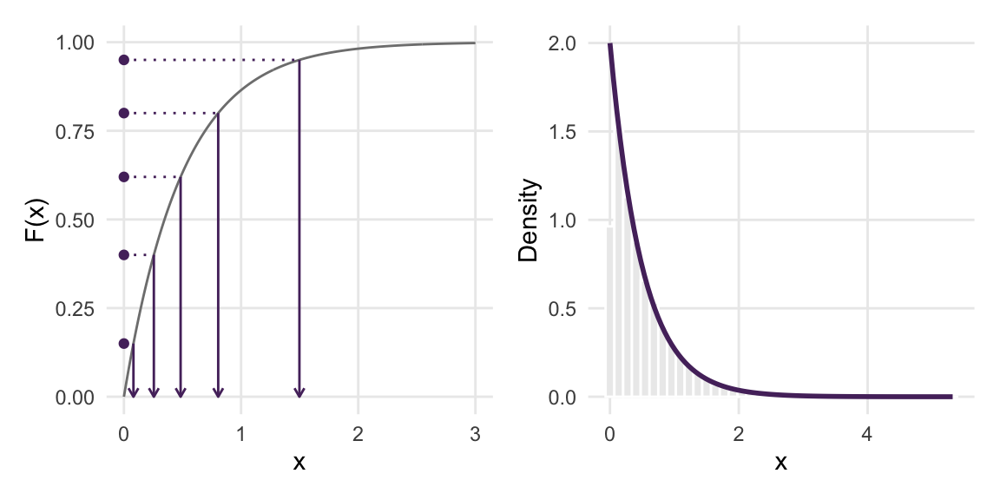
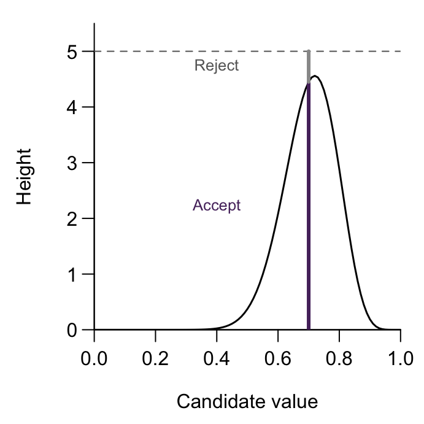
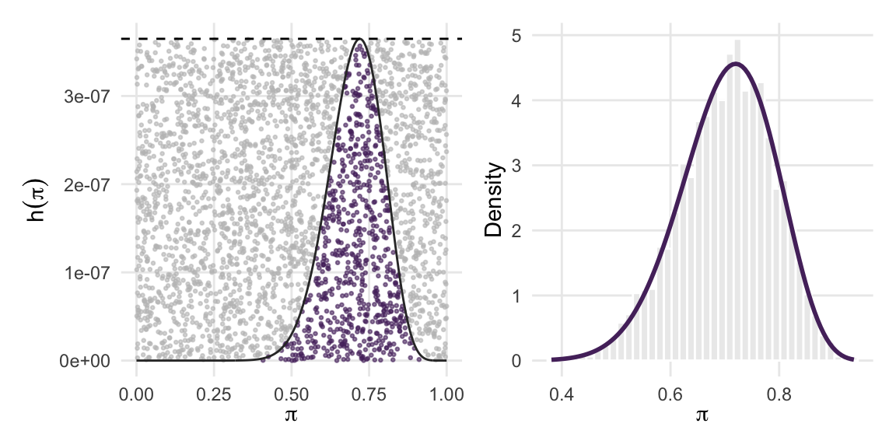
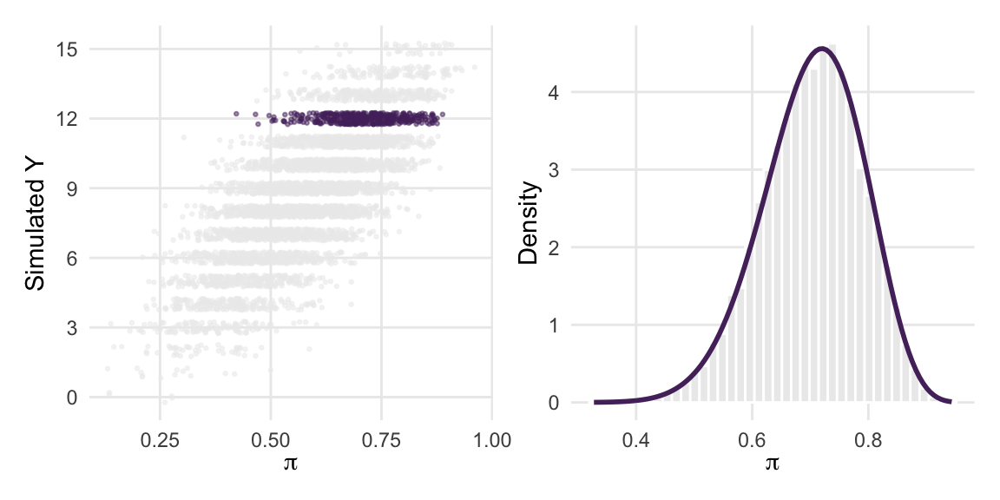
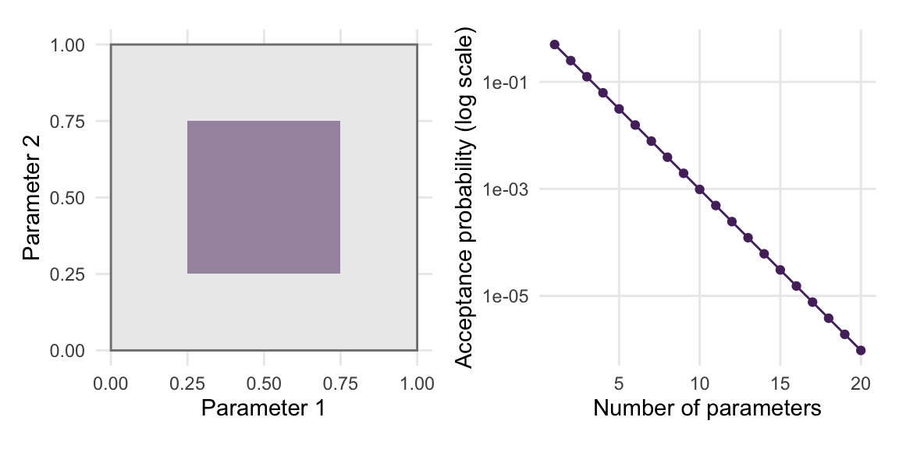

library(tidyverse)
library(patchwork)
set.seed(84735)1 Probability and Simulation
Suppose you run a stop-signal task. A participant sees an arrow and presses a key as quickly as possible. On some trials, a tone sounds shortly after the arrow, telling the participant to withhold the response. One account of this task treats it as a race between a go process and a stop process (Logan & Cowan, 1984). The go process starts when the arrow appears; the stop process starts when the tone sounds. The participant stops successfully if the stop process finishes first.
If you specify distributions for the durations of these processes, how can you calculate the probability of stopping? One approach is to simulate many races and calculate the proportion in which the stop process wins. This proportion is a Monte Carlo estimate. It lets you study a model’s predictions even when calculating them directly is difficult.
This chapter develops that approach. We begin with probability distributions and expectations, use simulation to approximate them, and examine the accuracy of the resulting estimates. We then study how to generate draws from a distribution and why some sampling methods become inefficient. For further background on probability, simulation, and Bayesian inference, see Bayes Rules! (Johnson et al., 2022, Chapters 2, 3 and 8).
The code assumes that you can assign objects, call functions, and work with vectors in R. Run the following setup before working through the examples.
We use \(N\) for the number of Monte Carlo draws and \(n\) for the number of observed data points. The distinction matters because increasing \(N\) makes a computation more precise, whereas increasing \(n\) adds information about the phenomenon being studied.
Goals
- Describe random variables, probability masses, densities, and expectations using sums and integrals.
- Approximate integrals with random draws and understand why the Law of Large Numbers makes this work.
- Quantify the error of a Monte Carlo estimate and see it shrink at rate \(1/\sqrt{N}\).
- Generate draws from a distribution using inverse-transform and rejection sampling.
- Simulate a Bayesian model forward and recover the posterior by conditioning on the observed data.
- Recognize the situations in which independent Monte Carlo is not enough, which motivates the rest of the book.
1.1 Random variables, densities, and expectations
A random variable \(X\) is a quantity whose value is uncertain, and a probability distribution says how that uncertainty is spread over the possible values. When \(X\) is discrete, a probability mass function \(f(x) = P(X = x)\) assigns a probability to each value. When \(X\) is continuous, a probability density function \(f(x)\) assigns a density to each value, and probabilities are areas under it: \(P(a < X < b) = \int_a^b f(x)\,dx\). In both cases \(f\) is non-negative and the total probability is one. We write densities and mass functions as \(f(\cdot)\), with the argument indicating the variable concerned. Uppercase \(X\) denotes a random variable; lowercase \(x\) denotes a possible value. For a continuous variable, the density at a point is not a probability. Probabilities come from areas over intervals, and a density can exceed one.
Our running example concerns Nederlandse Spoorwegen (NS), the Dutch national railway operator. Sara commutes between Amsterdam and Utrecht and wants to learn the probability \(\pi\) that a train on her route arrives on time. For this example, she defines “on time” as no more than three minutes late and treats the journeys as independent, with the same on-time probability.
Before collecting data, Sara represents her uncertainty about \(\pi\) with a prior distribution, \(\pi \sim \text{Beta}(7,5)\). The symbol \(\sim\) means “has distribution”. A Beta distribution is defined on \([0,1]\), making it useful for an unknown probability. Its two positive shape parameters determine its shape; its mean is \(a/(a+b)\) for a \(\text{Beta}(a,b)\) distribution. Sara’s illustrative prior therefore has mean \(7/12 \approx 0.58\). It describes uncertainty about the on-time probability, rather than the variation between individual trains.

In Figure 1.1, the whole area under the curve is one. The small shaded area expresses how little prior probability Sara assigns to on-time rates above 0.8.
The expectation of a function \(g\) of \(X\) is the average of \(g(X)\), weighted by how probable each value is, \[ E[g(X)] = \sum_{x} g(x)\, f(x) \quad \text{(discrete)}, \qquad E[g(X)] = \int g(x)\, f(x)\,dx \quad \text{(continuous)}. \] For discrete \(X\), the sum runs over its possible values. Each term multiplies \(g(x)\) by the probability mass \(f(x)=P(X=x)\). For continuous \(X\), we instead multiply \(g(x)\) by the probability density \(f(x)\) and integrate over the support of \(X\), the set of possible values. The density at \(x\) is not the probability of that individual value; probabilities are obtained by integrating the density over intervals. For example, if \(X\) indicates whether a train is on time and \(P(X=1)=0.8\), then \(E[X]=0\times 0.2+1\times 0.8=0.8\).
The function \(g\) specifies what we want to average. The mean is \(E[X]\), with \(g(x) = x\). The variance is \(E[(X - \mu)^2]\). For a variable \(X\) supported on \([0,1]\), a probability is an expectation too. If \(\mathbb{1}\{X > 0.8\}\) is the indicator that equals one when \(X > 0.8\) and zero otherwise, then \[ P(X > 0.8) = \int_{0.8}^{1} f(x)\,dx = \int_0^1 \mathbb{1}\{x > 0.8\}\, f(x)\,dx = E\!\left[\mathbb{1}\{X > 0.8\}\right]. \]
Expressing summaries as expectations
For discrete \(X\), use \(E[g(X)]=\sum_x g(x)f(x)\). For continuous \(X\), use \(E[g(X)]=\int g(x)f(x)\,dx\), integrating over its support. Choosing \(g(x)=x\) gives the mean; choosing \(g(x)=(x-\mu)^2\), where \(\mu=E[X]\), gives the variance. An indicator function gives an event probability. These expectations must exist for the corresponding summary to be defined.
For Sara’s prior we can compute these integrals exactly, because the Beta family is well studied. The probability that the on-time rate exceeds 0.8 is a Beta integral, and R’s pbeta() knows the answer. We can also hand the integral to a numerical routine that knows nothing about the Beta family:
1 - pbeta(0.8, shape1 = 7, shape2 = 5)
#> [1] 0.05040957
integrate(function(p) dbeta(p, 7, 5), lower = 0.8, upper = 1)
#> 0.05040957 with absolute error < 5.6e-16
integrate(function(p) p * dbeta(p, 7, 5), lower = 0, upper = 1)
#> 0.5833333 with absolute error < 6.5e-15The last line computes the prior mean, \(7/12 \approx 0.583\). The function dbeta() evaluates a Beta density, whereas pbeta() returns the area to the left of its first argument. Thus 1 - pbeta(0.8, 7, 5) gives the shaded area in Figure 1.1. In the second line, integrate() computes that same area numerically; its reported absolute error concerns numerical integration, not uncertainty about \(\pi\).
Numerical integration is often effective for one parameter. Extending a simple grid to many parameters can be costly. With 100 evaluation points for each of ten parameters, a full grid contains \(100^{10}=10^{20}\) combinations. R’s integrate() is an adaptive one-dimensional routine, rather than such a multidimensional grid. With many parameters, evaluating every combination of grid points quickly becomes impractical. Monte Carlo offers another approach: Draw combinations of parameter values from the distribution and use them to estimate the quantity of interest.
Quiz yourself!
Sara wants the probability that the on-time rate is between 0.6 and 0.8. Write this probability as an expectation \(E[g(\pi)]\). What is \(g\)?
1.2 Pseudo-random numbers in R
Simulation needs random numbers, and lots of them. The generators we use produce pseudo-random numbers. These are deterministic sequences designed to behave like random draws for statistical computation. The classic recipe is the linear congruential generator, which starts from a seed \(x_0\) and repeats \[
x_{t+1} = (a\, x_t + b) \bmod M,
\] so that each number is an arithmetic function of the previous one (Hanada & Matsuura, 2022, Section 2.1). The operation “modulo \(M\)” returns the remainder after division by \(M\); R writes it as %%. For example, \((5\times7+3)\bmod16=6\). Here is a toy version with only 16 possible states. It illustrates repetition, but is not suitable for statistical work:
lcg <- function(N, seed, a = 5, b = 3, M = 16) {
x <- numeric(N)
x[1] <- seed
if (N > 1) for (t in 2:N) x[t] <- (a * x[t - 1] + b) %% M
x / M
}
lcg(20, seed = 7)
#> [1] 0.4375 0.3750 0.0625 0.5000 0.6875 0.6250 0.3125 0.7500 0.9375 0.8750
#> [11] 0.5625 0.0000 0.1875 0.1250 0.8125 0.2500 0.4375 0.3750 0.0625 0.5000The same seed gives the same sequence. With \(M=16\), there are only 16 possible states, so a state must eventually repeat. In this example the full sequence repeats after 16 values. Practical generators use much larger state spaces and more sophisticated recurrences. R’s default, the Mersenne Twister, has a period of \(2^{19937} - 1\), so the short repeating pattern of this toy example is avoided.
In R, runif(N) gives \(N\) pseudo-random numbers that are uniform on \((0, 1)\), and set.seed() fixes the seed, which is what makes a simulation reproducible:
set.seed(2026)
runif(3)
#> [1] 0.6986735 0.5565305 0.1401400
set.seed(2026)
runif(3)
#> [1] 0.6986735 0.5565305 0.1401400A seed reproduces a calculation when the generator, software, and sequence of random-number calls are the same. Resetting the same seed on every iteration restarts the sequence, so repeated calls can produce identical draws. Set the seed before a simulation rather than inside its sampling loop.
For reproducible work, record sessionInfo() and RNGkind() along with the code and seed. Changes in R or package versions can change results, and platform-dependent numerical calculations can differ slightly. R’s RNGversion() can restore earlier generator settings when reproducing older code; a seed alone does not record the full computing environment see the R documentation.
Uniform draws can also be transformed into draws from other distributions. For example, a uniform draw is below 0.8 with probability 0.8, so as.integer(runif(1) < 0.8) simulates an on-time indicator. We develop this idea further in the section on inverse-transform sampling.
R uses a consistent naming system for distribution functions:
| Prefix | Meaning | Beta example |
|---|---|---|
d |
Density, or probability mass for a discrete variable | dbeta(0.8, 7, 5) |
p |
Cumulative probability \(P(X\le x)\) | pbeta(0.8, 7, 5) |
q |
Quantile, the value at a specified cumulative probability | qbeta(0.95, 7, 5) |
r |
Random draws | rbeta(1000, 7, 5) |
The same prefixes apply to norm, binom, exp, and many other families. A quantile answers the reverse of a cumulative-probability question. For instance, qbeta(0.95, 7, 5) is the value below which 95% of Sara’s prior probability lies.
1.3 Monte Carlo integration
We first estimate the mathematical constant \(\pi\approx3.14159\) using points drawn in a square (Hanada & Matsuura, 2022, Section 2.2). In this example only, \(\pi\) denotes the circle constant, not Sara’s on-time probability.
A circle of radius \(r\) has area \(\pi r^2\). A quarter of a circle of radius one therefore has area \(\pi/4\). Place it in the unit square, whose horizontal and vertical coordinates both range from zero to one. The square has area one. If points are drawn uniformly across the square, the probability of falling in the quarter circle equals its fraction of the square’s area, \((\pi/4)/1=\pi/4\).

The distance from the origin to \((x,y)\) is \(\sqrt{x^2+y^2}\) by Pythagoras’ theorem. Thus a point is inside when \(x^2+y^2\le1\) (Figure 1.2). To simulate a point, draw its horizontal coordinate with runif() and its vertical coordinate independently with another call. Entry i of x and entry i of y form point i.
The expression x^2 + y^2 <= 1 checks the condition for every point and returns TRUE or FALSE. When averaged, R treats these as one or zero. The resulting proportion estimates \(\pi/4\), so multiplying by four estimates \(\pi\).
N <- 10000
x <- runif(N)
y <- runif(N)
inside <- x^2 + y^2 <= 1
4 * mean(inside)
#> [1] 3.1264darts <- tibble(x, y, inside)
running <- tibble(n_darts = seq_len(N), estimate = 4 * cumsum(inside) / n_darts)
p_darts <- darts |>
slice_head(n = 2000) |>
ggplot(aes(x, y, color = inside)) +
geom_point(size = 0.5, alpha = 0.6) +
scale_color_manual(values = c("TRUE" = "#552E6B", "FALSE" = "gray70"), guide = "none") +
coord_equal() +
labs(x = NULL, y = NULL)
p_running <- ggplot(running, aes(n_darts, estimate)) +
geom_hline(yintercept = pi, linetype = "dashed") +
geom_line(color = "#552E6B") +
scale_x_log10() +
labs(x = "Number of darts (log scale)", y = expression(hat(pi)))
patchwork::wrap_plots(p_darts, p_running, widths = c(1, 1.6))
Why does this work? Write \(I_i\) for the indicator that dart \(i\) lands inside. Each \(I_i\) is a random variable with \(E[I_i] = P(\text{inside}) = \pi/4\), and the darts are independent. The Law of Large Numbers states that an average of independent, identically distributed draws converges to its expectation, provided the absolute expectation is finite. The condition holds here because the indicators are bounded between zero and one. So \(\frac{1}{N}\sum_i I_i \to \pi/4\), and our estimate \(4 \bar{I} \to \pi\). The right panel of Figure 1.3 is the Law of Large Numbers in action.
Now look at what we did in the language of the previous section. The darts \((X, Y)\) are draws from the uniform density on the unit square, and \(\pi/4 = E[\mathbb{1}\{X^2 + Y^2 \le 1\}]\) is an expectation under that density. We estimated an integral by drawing from the density and averaging the function. The same averaging procedure applies to other distributions and functions.
Monte Carlo integration
To approximate \(E[g(X)]\), defined by a sum or integral:
- Draw \(X^{(1)}, \ldots, X^{(N)}\) independently from \(f\).
- Compute the average \(\bar{g} = \frac{1}{N} \sum_{i=1}^{N} g(X^{(i)})\).
When \(E[|g(X)|]<\infty\), the Law of Large Numbers implies that \(\bar{g} \to E[g(X)]\) as \(N \to \infty\). If \(g(X)\) also has finite variance, the Monte Carlo standard error of \(\bar{g}\) is \[ \text{SE}(\bar{g}) = \frac{\text{sd}(g(X))}{\sqrt{N}} \approx \frac{1}{\sqrt{N}} \sqrt{\frac{1}{N-1}\sum_{i=1}^{N} \left(g(X^{(i)}) - \bar{g}\right)^2}, \] and for large \(N\) the estimate is approximately Normal, so \(\bar{g} \pm 2\,\text{SE}\) is an approximate 95% confidence interval for the expectation being estimated. This uses the Central Limit Theorem and a finite, nonzero variance; it is not a guarantee for every simulation size.
1.3.1 How accurate is it?
The right panel of Figure 1.3 shows the estimate converging, but with 10,000 darts it is still visibly off. How far off should we expect it to be? The estimate is an average of independent draws of \(g(X, Y) = 4 \cdot \mathbb{1}\{X^2 + Y^2 \le 1\}\), so the Central Limit Theorem applies: the average is approximately Normal with mean \(\pi\) and standard deviation \(\text{sd}(g)/\sqrt{N}\). We can estimate \(\text{sd}(g)\) from the same draws:
g <- 4 * inside
estimate <- mean(g)
mc_se <- sd(g) / sqrt(N)
c(estimate = estimate, se = mc_se)
#> estimate se
#> 3.12640000 0.01652724Our estimate of \(\pi\) is \(3.126\), with estimated standard error \(0.017\). Its approximate 95% Monte Carlo confidence interval is \[ [3.093,\; 3.159]. \] If we repeated the entire simulation many times and constructed a confidence interval from each simulation, approximately 95% of these intervals would contain the true value of \(\pi\). This interval describes uncertainty from using finitely many simulated points. It does not describe uncertainty about a participant or a railway parameter.
The standard error decreases at rate \(1/\sqrt{N}\). For example, increasing the number of darts from 10,000 to 40,000 halves the standard error; increasing it to 1,000,000 reduces it by a factor of ten. These statements concern the typical size of simulation error. An individual estimate need not move closer to the truth every time more draws are added.
Quiz yourself!
If you quadruple the number of darts, by what factor does the Monte Carlo standard error shrink? Using \(\text{SE}=\sqrt{\pi(4-\pi)/N}\), how many darts are needed for an approximate 95% confidence interval with half-width 0.001? You may use \(\pi\approx3.14159\) for this planning calculation.
Let’s check the \(1/\sqrt{N}\) rule directly by repeating the whole experiment 200 times for three sample sizes and looking at the spread of the estimates.
estimate_pi <- function(N) 4 * mean(runif(N)^2 + runif(N)^2 <= 1)
repeats <- expand_grid(N = c(100, 1000, 10000), rep = 1:200) |>
mutate(estimate = map_dbl(N, estimate_pi))
repeats |>
ggplot(aes(factor(N), estimate)) +
geom_hline(yintercept = pi, linetype = "dashed") +
geom_jitter(width = 0.25, alpha = 0.3, color = "#552E6B", size = 0.8) +
labs(x = "Number of darts", y = expression(hat(pi)))
repeats |>
group_by(N) |>
summarize(observed_sd = sd(estimate), theoretical_se = sqrt(pi * (4 - pi) / first(N)))
#> # A tibble: 3 × 3
#> N observed_sd theoretical_se
#> <dbl> <dbl> <dbl>
#> 1 100 0.167 0.164
#> 2 1000 0.0522 0.0519
#> 3 10000 0.0166 0.0164The observed standard deviation of the estimates matches the theoretical standard error \(\sqrt{\pi(4 - \pi)/N}\), which follows from the variance of the indicator, \(\text{Var}(4 I) = 16 \cdot \tfrac{\pi}{4}(1 - \tfrac{\pi}{4}) = \pi(4 - \pi)\). Each row uses ten times as many darts as the one above it and is about \(\sqrt{10} \approx 3.2\) times more precise.
1.3.2 The recipe in general
The Monte Carlo recipe applies whenever we can generate independent draws from the required distribution and evaluate a function with a finite expectation. Return to the stop-signal task. For illustration, let the go duration be the sum of a Normal variable with mean 500 ms and standard deviation 50 ms and an Exponential variable with mean 100 ms. Such a sum is called an ex-Gaussian variable. Let the stop duration be a Normal variable with mean 200 ms and standard deviation 30 ms plus an Exponential variable with mean 50 ms. These choices illustrate the computation rather than estimates from a particular experiment.
We assume that the components and the two processes are independent. All finishing times must be measured from the same starting point. The go process begins at the arrow, whereas the stop process begins 250 ms later. We therefore add 250 to the simulated stop duration before comparing the finishing times. In R, an Exponential mean of 100 requires rate = 1/100, since its mean is the reciprocal of its rate.
N_races <- 100000
go <- rnorm(N_races, mean = 500, sd = 50) + rexp(N_races, rate = 1 / 100)
stop <- 250 + rnorm(N_races, mean = 200, sd = 30) + rexp(N_races, rate = 1 / 50)
stop_wins <- stop < go
p_stop <- mean(stop_wins)
c(estimate = p_stop, se = sd(stop_wins) / sqrt(N_races))
#> estimate se
#> 0.810640000 0.001238969Under these illustrative assumptions, the probability of stopping is approximately 81.1%, with Monte Carlo standard error 0.12 percentage points. We drew from the joint density of the two finishing times, which is easy because each is a sum of things R can draw, and averaged the indicator that the stop process won. We could just as easily estimate the mean finishing time of the winning process, the probability that a go response takes longer than 800 ms, or any other expectation, from the same draws. For each quantity, first specify the function to average and check that its expectation exists. The standard error concerns simulation under the chosen model, not uncertainty about whether the model is appropriate.
1.4 Generating draws from a distribution
So far, R has provided the required draws. In Bayesian analyses, however, the posterior distribution often does not belong to a familiar family with a built-in random generator. We therefore need methods for constructing draws. Inverse-transform sampling uses cumulative probabilities; rejection sampling uses the shape of a density. Both can produce independent draws when their inputs are independently generated.
1.4.1 Inverse-transform sampling
The cumulative distribution function (CDF), \(F(x)=P(X\le x)\), records how much probability lies to the left of \(x\). Its inverse, the quantile function, starts with a cumulative probability \(u\) and returns the corresponding value of \(x\). For a continuous, strictly increasing CDF, \(F^{-1}(u)\) is the value satisfying \(F(x)=u\).
Imagine choosing a height \(u\) uniformly between zero and one on a CDF plot. Move horizontally to the curve, then down to the \(x\) axis. The value you reach is a draw from the desired distribution. Figure 1.5 shows one such construction before we implement it.

Formally, draw \(U\sim\text{Unif}(0,1)\) and set \(X=F^{-1}(U)\). Because \(F\) is increasing, the events \(F^{-1}(U)\le x\) and \(U\le F(x)\) are equivalent. Hence \[ P(X\le x)=P(F^{-1}(U)\le x)=P(U\le F(x))=F(x). \] The last equality holds because a uniform draw falls below any number \(u\in[0,1]\) with probability \(u\). Thus the generated \(X\) has the desired CDF.
Take the Exponential distribution with rate \(\lambda\), which has \(F(x) = 1 - e^{-\lambda x}\) for \(x \geq 0\). To solve \(u=1-e^{-\lambda x}\), rearrange to \(1-u=e^{-\lambda x}\), take logarithms to get \(\log(1-u)=-\lambda x\), and divide by \(-\lambda\). This gives \(F^{-1}(u)=-\log(1-u)/\lambda\). So an Exponential draw is one line of code:
r_exponential <- function(N, rate) -log(1 - runif(N)) / rate
draws_exp <- r_exponential(10000, rate = 2)u_demo <- c(0.15, 0.4, 0.62, 0.8, 0.95)
x_demo <- -log(1 - u_demo) / 2
cdf_df <- tibble(x = seq(0, 3, length.out = 300), F = pexp(x, rate = 2))
segments <- tibble(u = u_demo, x = x_demo)
p_cdf <- ggplot(cdf_df, aes(x, F)) +
geom_line(color = "gray40") +
geom_segment(data = segments, aes(x = 0, xend = x, y = u, yend = u),
color = "#552E6B", linetype = "dotted") +
geom_segment(data = segments, aes(x = x, xend = x, y = u, yend = 0),
color = "#552E6B", arrow = arrow(length = unit(0.15, "cm"))) +
geom_point(data = segments, aes(0, u), color = "#552E6B") +
labs(x = "x", y = "F(x)")
p_hist <- ggplot(tibble(x = draws_exp), aes(x)) +
geom_histogram(aes(y = after_stat(density)), bins = 40, fill = "#ECECEC", color = "white") +
stat_function(fun = dexp, args = list(rate = 2), color = "#552E6B", linewidth = 1) +
labs(x = "x", y = "Density")
patchwork::wrap_plots(p_cdf, p_hist)
The histogram follows the Exponential density, and the simulated mean, 0.501, is close to \(1/\lambda=0.5\). This is one way to generate Exponential draws; it is not the algorithm used internally by R’s rexp() see its documentation.
A numerical quantile function is sufficient; a closed-form inverse is not required. For example, qnorm(runif(1000)) generates standard Normal draws even though the Normal quantile function has no elementary formula. For a discrete distribution, use the smallest \(x\) for which \(F(x)\ge u\). This selects the appropriate step of its CDF.
The limitation is that we need \(F^{-1}\). For a posterior density we typically know only the shape, \(f(\theta \mid y) \propto f(y \mid \theta) f(\theta)\), and computing the CDF, let alone inverting it, requires exactly the integral we were trying to avoid.
1.4.2 Rejection sampling
Rejection sampling generates candidates from an accessible distribution and keeps some of them to obtain the distribution we want. Suppose we can evaluate the target density \(f(x)\), or even just a function \(h(x)\) that is proportional to it, \(f(x) = h(x)/Z\) with an unknown constant \(Z\). Suppose also that we have some other density \(g(x)\), called the proposal, that we can draw from, and a constant \(M\) such that \[ h(x) \le M\, g(x) \quad \text{for every } x. \] The function \(M g(x)\) is an envelope. It lies at or above \(h\) everywhere. Rejection sampling draws a point uniformly under the envelope and keeps it if it also lies under \(h\).
For a uniform proposal on \([0,1]\), the envelope is a rectangle. A candidate’s horizontal position is uniform; its vertical position is uniform between zero and the envelope’s height. Where the target curve is high, a larger fraction of candidates lie below it and are kept. This makes accepted values more common in high-density regions.

Rejection sampling
Given a target \(h(x) \propto f(x)\), a proposal density \(g\), and a constant \(M\) with \(h(x) \le M g(x)\) for all \(x\):
- Propose. Draw \(x^\star \sim g\).
- Accept or reject. Draw \(u \sim \text{Unif}(0, 1)\). If \(u < h(x^\star) / (M g(x^\star))\), accept \(x^\star\); otherwise reject it and return to step 1.
The accepted values are independent draws from \(f\). The probability that a proposal is accepted is \(Z/M\) when \(g\) is a proper density, where \(Z = \int h(x)\,dx\).
Why does this produce draws from \(f\)? A proposal at \(x\) is accepted with probability \(h(x)/(M g(x))\), so the density of proposing \(x\) and accepting it is \[ g(x) \cdot \frac{h(x)}{M g(x)} = \frac{h(x)}{M}. \] This is a joint density for the candidate value together with acceptance, not yet the density among accepted values. Its integral is the probability of acceptance, \[ P(\text{accept})=\int\frac{h(x)}{M}\,dx=\frac{Z}{M}. \] To obtain the conditional density among accepted values, divide by that probability: \[ f(x\mid\text{accept})=\frac{h(x)/M}{Z/M}=\frac{h(x)}{Z}=f(x). \] This explains why the unknown normalizing constant \(Z\) is not needed to run the algorithm. The acceptance step corrects the relative frequencies of the proposed values.
For a fixed proposal \(g\), we want the smallest valid \(M\). Increasing \(M\) enlarges the envelope without changing the area under \(h\), so the acceptance rate \(Z/M\) falls. Choosing \(M\) too small is different; it invalidates the sampler wherever \(h(x)>Mg(x)\).
We now return to using \(\pi\) for an on-time probability. Apply rejection sampling to the function \(h(\pi) = \pi^{18}(1 - \pi)^{7}\) on the interval \([0, 1]\). A function proportional to a density is called its kernel. This one is the kernel of a \(\text{Beta}(19,8)\) density, which gives us a known distribution against which to check the sampler. The simplest proposal is the uniform density on \([0, 1]\), \(g(\pi) = 1\), and the smallest valid \(M\) is then the maximum of \(h\), which is at \(\pi = 18/25\). Every proposal is a uniform point in the unit interval and is accepted with probability \(h(\pi^\star)/M\).
h <- function(p) p^18 * (1 - p)^7
M <- h(18 / 25)
N_prop <- 20000
proposal <- runif(N_prop)
u <- runif(N_prop)
accept <- u < h(proposal) / M
draws_rej <- proposal[accept]
mean(accept)
#> [1] 0.2162env_df <- tibble(proposal, height = u * M, accept) |> slice_head(n = 3000)
curve_h <- tibble(p = seq(0, 1, length.out = 400), h = h(p))
p_env <- ggplot() +
geom_point(data = env_df, aes(proposal, height, color = accept), size = 0.5, alpha = 0.6) +
geom_line(data = curve_h, aes(p, h), color = "gray20") +
geom_hline(yintercept = M, linetype = "dashed") +
scale_color_manual(values = c("TRUE" = "#552E6B", "FALSE" = "gray75"), guide = "none") +
labs(x = expression(pi), y = expression(h(pi)))
p_rej <- ggplot(tibble(p = draws_rej), aes(p)) +
geom_histogram(aes(y = after_stat(density)), bins = 40, fill = "#ECECEC", color = "white") +
stat_function(fun = dbeta, args = list(shape1 = 19, shape2 = 8), color = "#552E6B", linewidth = 1) +
labs(x = expression(pi), y = "Density")
patchwork::wrap_plots(p_env, p_rej)
The left panel of Figure 1.8 shows how acceptance changes the distribution of candidates. The proposals fill the rectangle under the envelope uniformly; the accepted ones fill the region under \(h\) uniformly; and a uniform scatter under a curve, projected onto the horizontal axis, has that curve as its density. The right panel provides a visual check that the 4,324 accepted draws follow the \(\text{Beta}(19, 8)\) density.
The price is the rejections. Only 22% of the proposals survived, close to the theoretical rate \(Z/M = B(19, 8)/M = 0.219\), where \(B(19,8)\) is the Beta function, the normalizing constant of \(h\). The acceptance rate is the ratio of the area under \(h\) to the area under the envelope; a tighter envelope wastes fewer proposals. Here the flat envelope is a poor fit to a peaked target, and three out of four proposals are thrown away. Whether this is affordable depends on how many accepted draws we need and how expensive each proposal is. With several parameters, a poorly fitting envelope can become much more wasteful.
Products of many small likelihood terms can underflow, meaning the computer rounds them to zero. To avoid this, compute log densities directly and compare log(u) with log_h(proposal) - log_M. Taking log(h(proposal)) after an underflow has occurred cannot recover the lost value. Chapter 2 develops calculations on the log scale.
The Metropolis algorithm in Chapter 5 (The Metropolis Algorithm) also proposes a value and then accepts or rejects it. Its acceptance rule is different and depends on the current state. We will derive that rule separately.
Quiz yourself!
Suppose you had used \(M = 2\,h(18/25)\) instead of \(M = h(18/25)\), an envelope twice as high as necessary. What happens to the acceptance rate? What happens to the distribution of the accepted draws? And what if you had used \(M = h(18/25)/2\)?
1.5 Simulating a Bayesian model forward
Sara records 12 on-time arrivals among 15 trains. Conditional on \(\pi\), we model the count as \(Y\mid\pi\sim\text{Bin}(15,\pi)\). A Binomial distribution describes the number of successes in independent trials with a common success probability. Its probability mass at 12 is \[ P(Y=12\mid\pi)=\binom{15}{12}\pi^{12}(1-\pi)^3. \] The coefficient counts the arrangements of 12 on-time and three late arrivals. With the observed count fixed, this expression is the likelihood, viewed as a function of \(\pi\).
Bayes’ rule updates the prior by multiplying it by the likelihood and then normalizing. The Beta\((7,5)\) prior has kernel \(\pi^6(1-\pi)^4\), so \[ f(\pi\mid Y=12)\propto \underbrace{\pi^{12}(1-\pi)^3}_{\text{likelihood kernel}} \underbrace{\pi^6(1-\pi)^4}_{\text{prior kernel}} =\pi^{18}(1-\pi)^7. \] This is the Beta\((19,8)\) kernel used in the rejection-sampling example. The posterior distribution represents Sara’s uncertainty after observing the data. Chapter 2 develops Bayesian updating further.
We can also obtain this posterior by simulation. First draw a possible on-time probability from the prior, then generate a count using that value. Repeating these steps gives pairs \((\pi^{(s)},Y^{(s)})\), where \(s\) indexes simulations. Their joint distribution is \(f(\pi)f(y\mid\pi)\). The distribution of the simulated counts alone is the prior predictive distribution; it describes data predicted before observing Sara’s record.
Now retain only pairs whose simulated count is 12. Within those pairs, the distribution of \(\pi\) is the conditional distribution given \(Y=12\), which is precisely the posterior. Each entry of pi_prior below is used to generate one corresponding entry of y_sim; the logical condition selects the matching parameter draws.
N_sim <- 100000
pi_prior <- rbeta(N_sim, shape1 = 7, shape2 = 5) # 1. draw pi from the prior
y_sim <- rbinom(N_sim, size = 15, prob = pi_prior) # 2. simulate a week of trains
pi_post <- pi_prior[y_sim == 12] # 3. keep the weeks that match
length(pi_post)
#> [1] 8342joint <- tibble(pi = pi_prior, y = y_sim, keep = y_sim == 12)
p_joint <- joint |>
slice_head(n = 5000) |>
ggplot(aes(pi, y, color = keep)) +
geom_jitter(height = 0.25, width = 0, size = 0.5, alpha = 0.5) +
scale_color_manual(values = c("TRUE" = "#552E6B", "FALSE" = "gray75"), guide = "none") +
scale_y_continuous(breaks = seq(0, 15, 3)) +
labs(x = expression(pi), y = "Simulated Y")
p_post <- ggplot(tibble(pi = pi_post), aes(pi)) +
geom_histogram(aes(y = after_stat(density)), bins = 40, fill = "#ECECEC", color = "white") +
stat_function(fun = dbeta, args = list(shape1 = 19, shape2 = 8), color = "#552E6B", linewidth = 1) +
labs(x = expression(pi), y = "Density")
patchwork::wrap_plots(p_joint, p_post)
The left panel of Figure 1.9 shows the joint distribution. Small \(\pi\) produces small \(Y\), large \(\pi\) produces large \(Y\), and the purple row is the slice at \(Y = 12\). The right panel shows that the \(\pi\) values in that slice are distributed as \(\text{Beta}(19, 8)\). Their summaries agree with the exact posterior as well:
c(mean = mean(pi_post), sd = sd(pi_post), lower = quantile(pi_post, 0.025), upper = quantile(pi_post, 0.975))
#> mean sd lower.2.5% upper.97.5%
#> 0.7025736 0.0859124 0.5252125 0.8573623
c(mean = 19 / 27, sd = sqrt(19 * 8 / (27^2 * 28)), lower = qbeta(0.025, 19, 8), upper = qbeta(0.975, 19, 8))
#> mean sd lower upper
#> 0.70370370 0.08629368 0.52212521 0.85674000The retained draws describe uncertainty about \(\pi\). Their standard deviation is a posterior standard deviation; the interval between their 2.5th and 97.5th percentiles is a 95% equal-tailed credible interval. The Monte Carlo standard error of the estimated posterior mean is a different quantity, estimated by sd(pi_post) / sqrt(length(pi_post)). More simulations reduce that computational error without changing the posterior itself.
The link to rejection sampling follows by considering the probability of keeping a proposed \(\pi^\star\). It is \(P(Y=12\mid\pi^\star)\), since that is the probability that the simulated count matches the observed one. This value is at most one because \(Y\) is discrete and we use its full probability mass, including the Binomial coefficient. A likelihood in general is not a probability distribution over the parameter, and a continuous-data likelihood is not bounded by one.
With proposal \(g(\pi)=f(\pi)\) and unnormalized target \(h(\pi)=f(12\mid\pi)f(\pi)\), we therefore have \(h(\pi)\le g(\pi)\). The rejection constant \(M=1\) is valid, and the acceptance ratio is \(h(\pi)/g(\pi)=f(12\mid\pi)\).
Forward simulation is rejection sampling
For discrete data, drawing \(\pi\) from the prior, simulating data, and keeping the draws whose simulated data equal the observed data \(y\) is rejection sampling with proposal \(g(\pi) = f(\pi)\), unnormalized target \(h(\pi)=f(\pi)f(y\mid\pi)\) using the full data probability mass, and \(M=1\). Its acceptance rate is \[ P(\text{keep}) = \int f(y \mid \pi) f(\pi)\,d\pi = f(y), \] the prior predictive probability of the observed count, also called its marginal likelihood. Chapter 2 discusses this quantity further.
This calculation also reveals the computational cost. Only a fraction \(f(y)\) of simulations are retained. For the Beta-Binomial model, integrating the likelihood against the prior gives \[
f(y)=\binom{n}{y}\frac{B(7+y,5+n-y)}{B(7,5)},
\] where \(B(a,b)=\int_0^1 p^{a-1}(1-p)^{b-1}\,dp\) is the Beta normalizing constant. The following function evaluates the expression on the log scale before converting it back to a probability. lchoose() and lbeta() return the logarithms of the Binomial coefficient and Beta function.
f_y <- function(y, n, a, b) { # computed on the log scale to avoid overflow
exp(lchoose(n, y) + lbeta(a + y, b + n - y) - lbeta(a, b))
}
f_y(12, n = 15, a = 7, b = 5)
#> [1] 0.08409611The calculation predicts the acceptance rate; about 8% of the simulated records were retained in our run. Now suppose Sara keeps going. Consider longer records with 120 of 150 and 1,200 of 1,500 trains on time. The observed proportion stays at 0.8. The chance that a simulated record matches hers exactly shrinks roughly in proportion to the number of trains:
survival <- tibble(n = c(15, 150, 1500), y = c(12, 120, 1200)) |>
mutate(
f_y = f_y(y, n, a = 7, b = 5),
survivors = map2_int(n, y, \(n, y) sum(rbinom(N_sim, size = n, prob = pi_prior) == y))
)
survival
#> # A tibble: 3 × 4
#> n y f_y survivors
#> <dbl> <dbl> <dbl> <int>
#> 1 15 12 0.0841 8492
#> 2 150 120 0.00686 672
#> 3 1500 1200 0.000650 70For the largest record, 70 of 100,000 simulations reproduce the observed count. These are still valid posterior draws, but fewer retained values mean more Monte Carlo error. Whether they are sufficient depends on the summary and precision required. A small number might give a rough mean while providing little information about a small tail probability.
Matching additional observations can lower acceptance further, but the joint matching probability is a product of marginal probabilities only under independence. For continuous observations, the probability of an exact match is zero. Accepting values within a tolerance changes the target and requires additional justification.
Quiz yourself!
Sara’s colleague Joost keeps a longer record: 60 trains, 48 of them on time. Under the same \(\text{Beta}(7, 5)\) prior, roughly how many of 100,000 forward simulations will match his record? Use the function f_y() to find out, and explain why the answer is smaller than for Sara’s week.
1.6 When independent draws are not enough
Monte Carlo integration and sampling are separate tasks. If we can draw from the desired distribution, we can estimate many of its summaries by averaging. The difficulty is often obtaining those draws efficiently. Familiar distributions have built-in generators, and some others have accessible quantile functions or useful rejection envelopes. More complicated posteriors may have none of these conveniences.
1.6.1 One parameter: Using what we can evaluate
A posterior can often be evaluated up to a constant through \[ f(\theta\mid y)\propto f(y\mid\theta)f(\theta). \] Here \(\theta\) denotes the unknown parameter or parameters, and \(y\) the fixed observed data. The right-hand side gives the posterior’s relative height at different values of \(\theta\), even when the integral needed to normalize it is difficult. This is enough for rejection sampling if we can find a suitable envelope. The Beta example showed the calculation in one dimension, where the target and envelope can be plotted directly.
1.6.2 Several parameters: Why a poor proposal becomes expensive
Consider a simple illustration with several parameters, each between zero and one. Suppose the target is uniform on the interval \([0.25,0.75]\) for each parameter, but our proposal draws every coordinate independently from \([0,1]\). A proposal is kept only if all its coordinates lie in the target intervals.
For one parameter, the acceptable interval occupies half the proposal range, so the acceptance probability is \(1/2\). For two parameters, both independent conditions must hold, giving \((1/2)(1/2)=1/4\). With \(d\) parameters, the acceptance rate is \((1/2)^d\).

At ten parameters, about one in 1,024 proposals is accepted; at twenty, about one in a million. Each individual condition is easy to satisfy, yet satisfying all of them at once is unlikely. This example requires only multiplication of independent probabilities, rather than geometry in higher dimensions.
The problem is the mismatch between proposal and target. In this deliberately simple example, drawing each coordinate directly from \([0.25,0.75]\) solves it completely. For a real posterior, finding a proposal that matches both its concentration and the relationships between parameters can be much harder. Dimension alone does not force rejection sampling to fail, and dependent draws are not the only possible solution.
Markov chain Monte Carlo offers another approach. Instead of generating every candidate independently, we construct a sequence in which the next state depends on the current state. With an appropriate transition rule, long-run averages can estimate expectations under the target distribution. A Markov chain has the specific property that, conditional on the current state, its next state does not depend on the earlier history. Dependence alone does not ensure either this property or the desired long-run distribution.
A chain can use its current location to propose nearby values, but this does not guarantee efficient exploration. It may move slowly or remain in one region for a long time. Chapter 3 (Markov Chains) develops the conditions needed for these methods, and Chapter 4 (Diagnosing Markov Chains) explains how to assess their performance.
1.7 Chapter summary
This chapter introduced simulation as a way to calculate properties of probability models.
- Expectations are probability-weighted sums, \(\sum_x g(x)f(x)\), or integrals, \(\int g(x)f(x)\,dx\). Means, variances, and event probabilities can be expressed this way when they exist.
- Monte Carlo integration draws independently from the required distribution and averages \(g(X)\). The Law of Large Numbers establishes convergence when the absolute expectation is finite. With finite variance, the standard error is \(\text{sd}(g(X))/\sqrt{N}\). The rate does not explicitly depend on dimension, but the variance and difficulty of generating draws can.
- Pseudo-random numbers come from a deterministic generator. Reproducibility requires the seed, code, generator settings, and software environment.
- Inverse-transform sampling converts uniform draws into quantiles of the target distribution. A numerical quantile function can be sufficient.
- Rejection sampling accepts a proposal from \(g\) with probability \(h(x)/(Mg(x))\). A valid envelope satisfies \(h(x)\le Mg(x)\) everywhere, and a tighter envelope improves acceptance for a fixed proposal.
- Forward simulation generates parameters and data from their joint distribution. For discrete data, retaining exact matches gives posterior draws. The acceptance rate is the prior predictive probability of the observed data.
- Poorly matched proposals can be expensive with many parameters. Markov chain Monte Carlo is one approach to this difficulty; its dependent draws require separate convergence and accuracy checks.
1.8 Quiz answers
Quiz 1. \(P(0.6 < \pi < 0.8) = E[g(\pi)]\) with \(g(\pi) = \mathbb{1}\{0.6 < \pi < 0.8\}\), the function that equals one inside the interval and zero outside it, and the expectation taken under the \(\text{Beta}(7, 5)\) prior. The Monte Carlo estimate is the proportion of prior draws that land in the interval.
Quiz 2. The standard error is proportional to \(1/\sqrt{N}\), so quadrupling \(N\) halves it. For a 95% interval of \(\pm 0.001\) we need \(2\sqrt{\pi(4-\pi)/N} \le 0.001\), which gives \(N \ge 4 \pi (4 - \pi) / 0.001^2 \approx 10.8\) million darts. Reducing the interval width by a factor of ten requires a hundred times as many draws with this estimator.
Quiz 3. With an envelope twice as high, each proposal is accepted with half the probability, so the acceptance rate halves from about 22% to about 11%. The distribution of the accepted draws does not change. The acceptance probability is still proportional to \(h\), and the constant cancels in the argument that the accepted draws have density \(f\). With \(M = h(18/25)/2\), the envelope lies below \(h\) near the mode, and the ratio \(h(\pi)/M\) exceeds one there, so every proposal near the mode is accepted; the peak is underrepresented relative to the tails, and the accepted draws have the wrong distribution. An envelope that is too low gives wrong answers; one that is too high only wastes time.
Quiz 4. The acceptance rate is the marginal likelihood f_y(48, n = 60, a = 7, b = 5) \(= 0.018\), so roughly 1,800 of 100,000 simulations match Joost’s record, against about 8,400 for Sara’s week. With more trains there are more possible values of \(Y\), and the prior probability of any one exact value is spread more thinly; the survival rate falls roughly in proportion to \(n\).
1.9 Exercises
1.9.1 Conceptual exercises
Exercise 1.1 (Writing summaries as expectations) For each of the following quantities, write it as \(E[g(X)]\) for a suitable function \(g\), say what distribution \(X\) has, and write one line of R that estimates it from a vector x of draws.
- \(P(X > 2)\) for \(X \sim \text{N}(0, 1)\).
- The variance of a \(\text{Beta}(2, 5)\) variable.
- The posterior probability that a proportion \(\pi\) exceeds 0.5, given draws from the posterior.
- The posterior predictive probability that the next train is on time, given posterior draws of \(\pi\). Hint: Conditional on \(\pi\), the success probability is \(\pi\); average this over the posterior uncertainty.
Exercise 1.2 (Seeds and sequences) A student estimates the same posterior mean in two Monte Carlo runs with identical inputs. The function simulate_posterior(a, b, n, y) begins with set.seed(1). She averages the two estimates to reduce Monte Carlo error.
- Explain what the seed inside the function does to the two runs.
- Is the averaged estimate more precise than a single run? Why or why not?
- Rewrite the workflow so that the two runs are independent but the whole analysis is still reproducible.
Exercise 1.3 (Envelopes) A rejection sampler for a target \(h(x)\) uses a proposal \(g\) and a constant \(M\).
- Explain in one sentence why \(M g(x) \ge h(x)\) must hold for every \(x\), and what goes wrong if it fails on some interval.
- The sampler accepts 4% of its proposals. Someone suggests using the accepted draws anyway, since “4% of a million is still 40,000 draws”. Is this a valid objection to the sampler’s correctness, to its efficiency, or to neither?
- If you could choose a proposal \(g\) that is proportional to \(h\), what would \(M\) be, and what would the acceptance rate be?
Exercise 1.4 (Forward simulation as rejection sampling) Consider a model for counts, with a Gamma prior on the expected count \(\lambda\): \(\lambda \sim \text{Gamma}(3, 1)\) and \(Y_i \mid \lambda \sim \text{Pois}(\lambda)\) for \(i = 1, \ldots, 6\), with observed data \(y = (2, 0, 4, 1, 3, 2)\). The Gamma parameters are shape and rate, so its density is \(f(\lambda)=\lambda^2e^{-\lambda}/2\) for \(\lambda>0\). Conditional on \(\lambda\), the six counts are independent and \(P(Y_i=k\mid\lambda)=e^{-\lambda}\lambda^k/k!\). In R, use rgamma(N, shape = 3, rate = 1) and rpois(N, lambda) to simulate these distributions.
- Describe the forward simulation that produces draws from the posterior of \(\lambda\).
- Identify the proposal, the target, and the acceptance probability of the equivalent rejection sampler.
- Write down the acceptance rate as an integral. Would it be larger or smaller if the six observations were replaced by their sum, \(\sum y_i = 12\), observed as a single Poisson count with rate \(6\lambda\)? Explain.
1.9.2 Practical exercises
Exercise 1.5 (Two estimators of \(\pi\)) The darts estimate \(\pi/4\) as the proportion of uniform points under the curve \(y = \sqrt{1 - x^2}\). An alternative is to draw \(X \sim \text{Unif}(0, 1)\) and average \(g(X) = \sqrt{1 - X^2}\), which also has expectation \(\pi/4\) (Hanada & Matsuura, 2022, Section 2.2).
- Implement both estimators with \(N = 10{,}000\) and report each with its Monte Carlo standard error.
- Repeat each estimator 500 times and compare the standard deviations of the two sets of estimates. Which estimator is more precise, and by what factor?
- Explain the difference in terms of the variance of the two functions being averaged.
Exercise 1.6 (A distribution without a mean) This optional exercise examines why the finite-expectation condition matters. The standard Cauchy distribution has CDF \(F(x) = \tfrac{1}{2} + \tfrac{1}{\pi}\arctan(x)\).
- Derive \(F^{-1}(u)\) and write a function that generates Cauchy draws from uniform draws. Check it against
dcauchy()with a histogram, restricting the plot to \([-10, 10]\). - Plot the running mean of 100,000 draws against the number of draws. Compare with the running mean of 100,000 Normal draws. What do you see, and what does it say about the Law of Large Numbers?
- The Cauchy distribution reappears in Chapter 5 (The Metropolis Algorithm) as a prior. Would a Monte Carlo estimate of the median of your draws behave better than the mean? Try it.
Exercise 1.7 (The inhibition function) Return to the stop-signal race model of the chapter. The stop-signal delay was fixed at 250 ms. In an experiment it varies from trial to trial.
- Write a function
p_stop(ssd, N_races = 100000)that returns the Monte Carlo estimate of the probability of stopping for a given delay, together with its standard error. - Evaluate it for delays from 0 to 500 ms in steps of 50 ms and plot the probability of successful stopping. The inhibition function is often plotted instead as the complementary probability of responding, so label your vertical axis explicitly.
- Change the mean of the Normal component of the stop duration from 200 ms to 300 ms, keeping its standard deviation and Exponential component unchanged. Redraw the curve. Describe in words what a slower stop process does to the inhibition function.
Exercise 1.8 (Rejection sampling with a better envelope) The uniform envelope in Figure 1.8 wastes three of every four proposals.
- Use a \(\text{Beta}(2, 2)\) proposal instead. Find the smallest valid \(M\) numerically with
optimize()applied to the ratio \(h(\pi)/g(\pi)\), and run the sampler. - Report the acceptance rate and compare the histogram of the accepted draws with the \(\text{Beta}(19, 8)\) density.
- Try a \(\text{Beta}(15, 6)\) proposal. What acceptance rate do you get, and why is it so much better? What would happen with a \(\text{Beta}(25, 4)\) proposal, whose left tail near zero is thinner than the target’s? Examine the limiting ratio as \(\pi\to0\); a numerical maximum on a finite search interval is not a proof of a valid envelope.
1.9.3 Applied exercises
Exercise 1.9 (Believing in ghosts) The pulse_of_the_nation data in the bayesrules package record, for 1,000 American adults, whether they believe in ghosts (the ghosts variable). Let \(\pi\) be the population proportion who do, with prior \(\pi \sim \text{Beta}(2, 4)\).
- Load
data("pulse_of_the_nation", package = "bayesrules")and inspecttable(pulse_of_the_nation$ghosts, useNA = "ifany")before coding the response. Keep respondents with a recorded yes/no answer, and document which value denotes belief. Take the first 30 eligible respondents as your data and count how many believe in ghosts. Use forward simulation with 100,000 prior draws to approximate the posterior of \(\pi\). Report the number of retained draws, the posterior mean, and a 95% interval, and compare them with the exact Beta posterior. - Now use all eligible respondents, reporting their actual number rather than assuming there are 1,000 complete responses. How many of 100,000 forward simulations match the observed count? Use
f_y()from the chapter to predict this number before you run the simulation. - Sample the posterior for the full data by rejection sampling instead, with a uniform proposal and \(M\) equal to the maximum of the posterior kernel. Report the acceptance rate. Compare the retained sample sizes and Monte Carlo standard errors for the posterior mean. Explain the difference in efficiency and what the methods have in common. A low acceptance rate does not invalidate the retained draws. Compute the kernel and acceptance comparison on the log scale to avoid underflow.